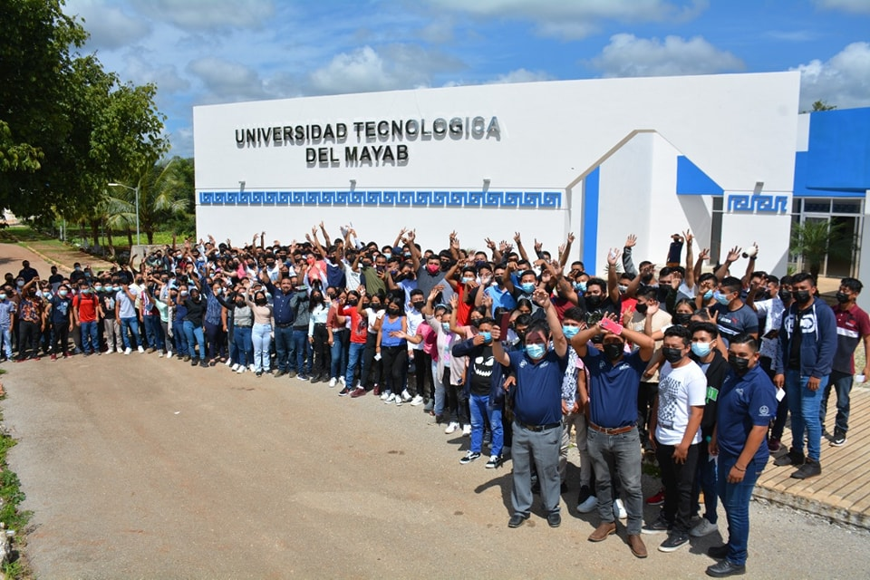
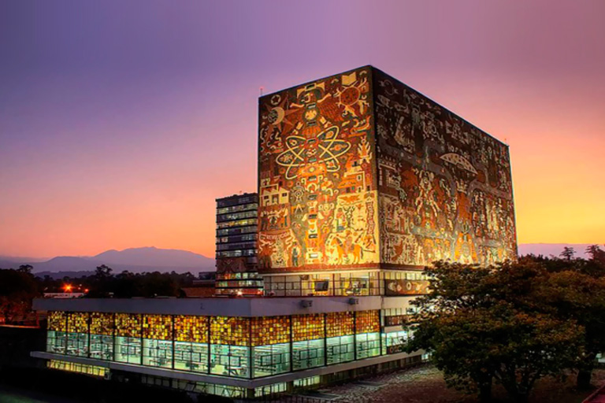
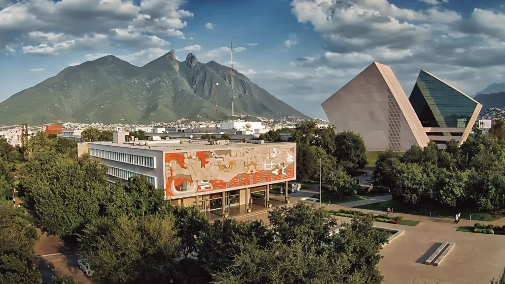
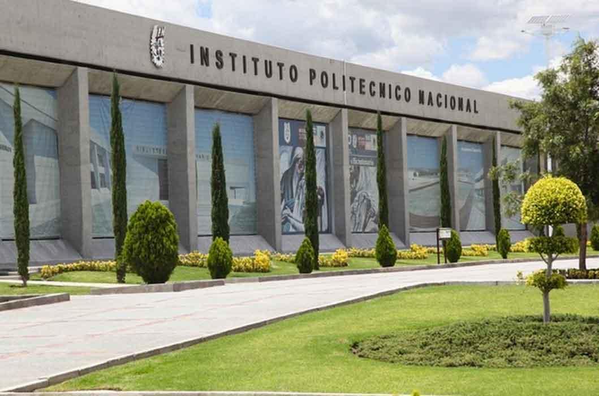

Descripción: La Universidad Tecnológica del mayab ofrece un ambiente académico orientado a la innovación y el desarrollo tecnológico.
Planes de Estudio: En Ingeniería Mecánica, se abordan temas como diseño, fabricación y mantenimiento de sistemas mecánicos.
Requisitos:
Costo: $5000 anuales.
Descripción: La Universidad Nacional Autónoma de México es una de las instituciones más prestigiosas de América Latina, enfocada en la investigación y el desarrollo cultural.
Planes de Estudio: Los estudiantes aprenden sobre termodinámica, mecánica de fluidos y diseño mecánico.
Requisitos:
Costo: $2000 anuales.
Descripción: El Instituto Tecnológico y de Estudios Superiores de Monterrey es reconocido por su enfoque en formación integral y la innovación.
Planes de Estudio: Incluye materias de diseño asistido por computadora, manufactura avanzada y gestión de proyectos.
Requisitos:
Costo: $60000 anuales.
Descripción: El Instituto Politécnico Nacional es importante en México, enfocado en educación tecnológica y científica.
Planes de Estudio: Aborda temas como mecánica de materiales, termodinámica y diseño mecánico.
Requisitos:
Costo: $3000 anuales.
